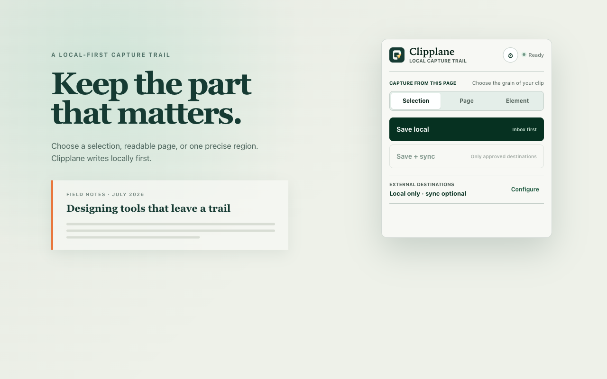
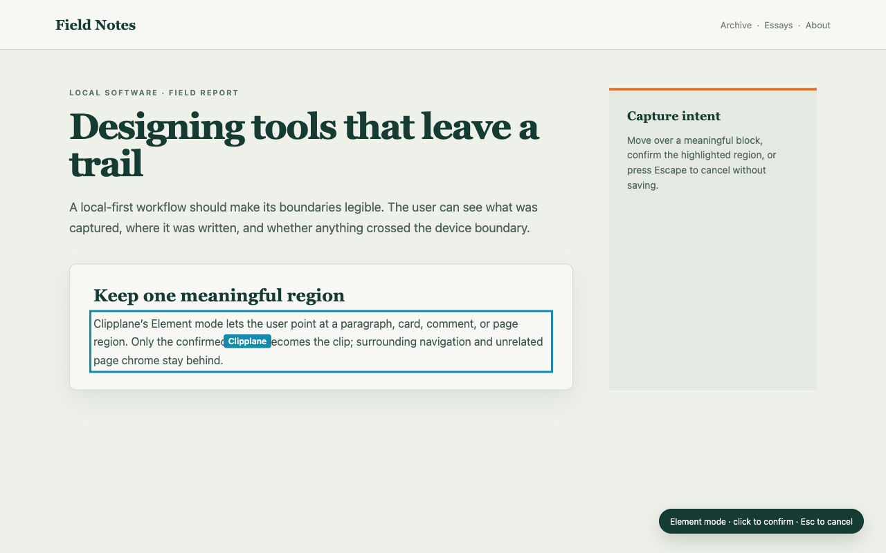
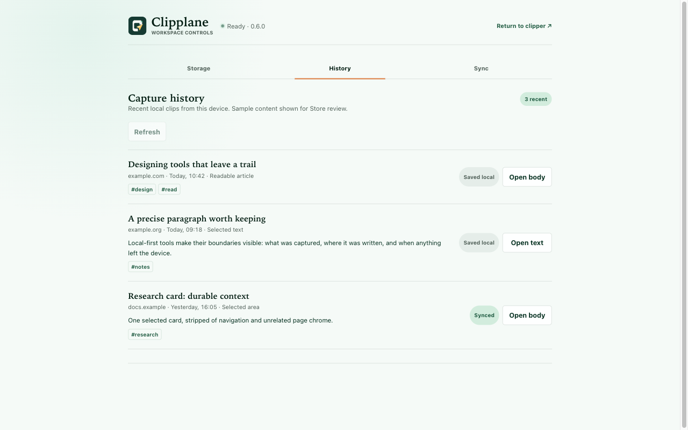

Selection
Saves the text you highlighted. Best when exact wording matters and the surrounding page does not.
Clipplane turns a selection, a readable page, or one chosen element into clean local Markdown with its source attached.
Local saving is the default. Nothing is sent to Notion or flomo unless you configure that destination, consent to it, and choose Save + sync.
Choose the boundary
Ordinary copying loses context. Saving a whole page often keeps too much. Clipplane makes the capture boundary explicit before it writes anything.
Saves the text you highlighted. Best when exact wording matters and the surrounding page does not.
Extracts the readable body, keeps useful structure, and removes navigation and page chrome.
Lets you point at a card, section, comment, or code block and confirm that region before saving.
Data path
Clipplane has no account, telemetry service, advertising backend, or Clipplane-operated content cloud.
A click, context-menu action, or confirmed Element selection starts capture.
The active page is reduced to the boundary you requested.
Markdown, source details, and a local capture trail stay on your computer.
Only Save + sync can send the confirmed capture to a consented destination.
Current candidate
Green appears only after a confirmed result. Local success and external sync are reported separately, so a failed sync never hides a safe local copy.



Availability
Clipplane 0.6.0 is a Chrome Web Store candidate. The Store item and signed Windows and macOS Host installers are not public. There is no working download button to show yet.